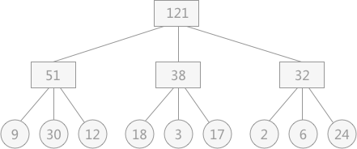
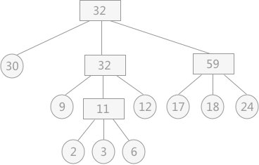
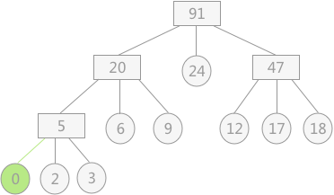
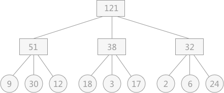
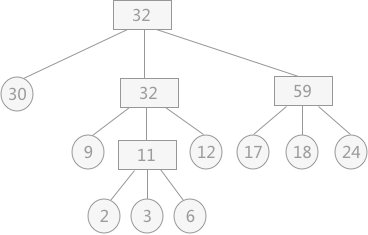
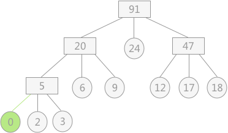

最佳归并树详解
通过上一节对置换-选择排序算法的学习了解到，通过对初始文件进行置换选择排序能够获得多个长度不等的初始归并段，相比于按照内存容量大小对初始文件进行等分，大大减少了初始归并段的数量，从而提高了外部排序的整体效率。
本节带领大家思考一个问题：无论是通过等分还是置换-选择排序得到的归并段，如何设置它们的归并顺序，可以使得对外存的访问次数降到最低？
例如，现有通过置换选择排序算法所得到的 9 个初始归并段，其长度分别为：

图 1 3-路平衡归并
若想使树的带权路径长度最短，就是构造赫夫曼树。

依照图 2 所示，其对外存的读写次数为：
对于具体设置哪个结点的度为 2，为了使总的带权路径长度最短，正确的选择方法是：附加一个权值为 0 的结点（称为“虚段”），然后再构建赫夫曼树。例如图 2 中若去掉权值为 30 的结点，其附加虚段的最佳归并树如图 3 所示：

在一般情况下，对于 k–路平衡归并来说，若 (m-1)MOD(k-1)=0，则不需要增加虚段；否则需附加 k-(m-1)MOD(k-1)-1 个虚段。
本章用了 4 节的内容介绍了实现外部排序的两个过程：
为了提高整个外部排序的效率，本章分别从以上两个方面对外部排序进行了优化：
本节带领大家思考一个问题：无论是通过等分还是置换-选择排序得到的归并段，如何设置它们的归并顺序，可以使得对外存的访问次数降到最低？
例如，现有通过置换选择排序算法所得到的 9 个初始归并段，其长度分别为：
9，30，12，18，3，17，2，6，24。在对其采用 3-路平衡归并的方式时可能出现如图 1 所示的情况：
图 1 3-路平衡归并
假设在进行平衡归并时，操作每个记录都需要单独进行一次对外存的读写，那么图 1 中的归并过程需要对外存进行读或者写的次数为：提示：图 1 中的叶子结点表示初始归并段，各自包含记录的长度用结点的权重来表示；非终端结点表示归并后的临时文件。
（9+30+12+18+3+17+2+6+24）*2*2=484（图 1 中涉及到了两次归并，对外存的读和写各进行 2 次）
从计算结果上看，对于图 1 中的 3 叉树来讲，其操作外存的次数恰好是树的带权路径长度的 2 倍。所以，对于如何减少访问外存的次数的问题，就等同于考虑如何使 k-路归并所构成的 k 叉树的带权路径长度最短。若想使树的带权路径长度最短，就是构造赫夫曼树。
若对上述 9 个初始归并段构造一棵赫夫曼树作为归并树，如图 2 所示：在学习赫夫曼树时，只是涉及到了带权路径长度最短的二叉树为赫夫曼树，其实扩展到一般情况，对于 k 叉树，只要其带权路径长度最短，亦可以称为赫夫曼树。

图 2 赫夫曼树作为3-路归并树
依照图 2 所示，其对外存的读写次数为：
(2*3+3*3+6*3+9*2+12*2+17*2+18*2+24*2+30)*2=446
通过以构建赫夫曼树的方式构建归并树，使其对读写外存的次数降至最低（k-路平衡归并，需要选取合适的 k 值，构建赫夫曼树作为归并树）。所以称此归并树为最佳归并树。
附加“虚段”的归并树
上述图 2 中所构建的为一颗真正的 3叉树（树中各结点的度不是 3 就是 0），而若 9 个初始归并段改为 8 个，在做 3-路平衡归并的时候就需要有一个结点的度为 2。对于具体设置哪个结点的度为 2，为了使总的带权路径长度最短，正确的选择方法是：附加一个权值为 0 的结点（称为“虚段”），然后再构建赫夫曼树。例如图 2 中若去掉权值为 30 的结点，其附加虚段的最佳归并树如图 3 所示：

图 3 附加虚段的最佳归并树
对于如何判断是否需要增加虚段，以及增加多少虚段的问题，有以下结论直接套用即可：注意：虚段的设置只是为了方便构建赫夫曼树，在构建完成后虚段自动去掉即可。
在一般情况下，对于 k–路平衡归并来说，若 (m-1)MOD(k-1)=0，则不需要增加虚段；否则需附加 k-(m-1)MOD(k-1)-1 个虚段。
本章用了 4 节的内容介绍了实现外部排序的两个过程：
- 将整个初始文件分为多个初始归并段;
- 将初始归并段进行归并，直至得到一个有序的完整文件；
为了提高整个外部排序的效率，本章分别从以上两个方面对外部排序进行了优化：
- 在实现将初始文件分为 m 个初始归并段时，为了尽量减小 m 的值，采用置换-选择排序算法，可实现将整个初始文件分为数量较少的长度不等的初始归并段。
- 同时在将初始归并段归并为有序完整文件的过程中，为了尽量减少读写外存的次数，采用构建最佳归并树的方式，对初始归并段进行归并，而归并的具体实现方法是采用败者树的方式。
关注公众号「站长严长生」，在手机上阅读所有教程，随时随地都能学习。内含一款搜索神器，免费下载全网书籍和视频。

微信扫码关注公众号